第6章 开发案例：井字棋
井字棋游戏，又称“三子棋”或“井字过三关”，是一种简单且富有策略性的两人对弈游戏。游戏在一个3x3的棋盘上进行，双方轮流在空格中放置自己的棋子（通常为X和O）。游戏的目标是使自己的棋子在棋盘的横、竖或斜线上连成一线，即三子连成一线（如XXX、OOO），则该玩家即为胜者。如果棋盘填满而双方均未能连成一线，则为平局。游戏开始时，玩家可以选择先手或后手。先手玩家在棋盘的中心空格放置自己的第一个棋子，之后双方轮流进行。每一步都需要玩家仔细考虑，因为每一步都可能影响到后续的局面发展。随着游戏的进行，棋盘上的局势会逐渐明朗，玩家需要灵活运用策略，既要防止对手连成一线，又要努力创造自己的连线机会。
下面我们就来看一下，如何利用大模型交互来实现简易的井字棋游戏。我们与 ChatGPT进行了多轮交互，交互过程包括两种实现方式。
6.1 有一定经验的开发者
第一种情况，我们假设开发者有一定的经验，开发者知道每一步大致要做什么事情，我们来看开发者如何和大模型进行交互。
6.1.1 总体思路
交互1：整体结构设计
用户：
开始跟之前的操作一样，也是搞清楚开发的整体步骤。
我想要使用Android Studio开发平台和java语言来开发一个井字棋的小游戏，井字棋的游玩规则是：两个玩 家轮流在3x3的棋盘中下棋，先连成一条线的玩家获得胜利。我给你的图片是最后想要实现的界面效果，现在请你首先告诉我我们应该怎么样一步一步来在Android中实现这个井字棋游戏。

ChatGPT：
开发一个井字棋游戏的Android应用主要涉及以下步骤：
步骤1 ： 设置开发环境
确保你的Android Studio和Java开发环境都已经安装好并配置妥当。
步骤2 ：创建新项目
- 打开Android Studio，选择“Start a new Android Studio project”。
- 选择一个适合的项目模板，对于井字棋游戏，通常选择“Empty Activity”即可。
- 填写你的项目名称、保存位置、语言（Java），并选择最低的API等级。
步骤3 ： 设计界面
根据你给的图片，我们需要设计一个3x3的网格来放置井字棋的X和O。
- 在
res/layout/activity_main.xml文件中使用GridLayout或者TableLayout。 - 为每一个格子创建一个
Button或者TextView，并设置合适的ID。 - 设置界面的背景颜色和线条颜色，确保与你提供的图片效果一致。
步骤4 ：编写游戏逻辑
- 创建一个二维数组或者其他数据结构来跟踪棋盘状态。
- 编写处理玩家移动的函数，更新棋盘状态，并在界面上显示。
- 检查胜利条件，即任意行、列或对角线上的三个格子被同一个玩家占据。
- 轮流机制的实现，确保玩家交替进行移动。
- 当某个玩家胜利时，显示胜利消息，并提供重新开始游戏的选项。
步骤5 ：添加交互逻辑
- 为每个棋盘上的
Button或TextView设置点击事件监听器。 - 在点击事件中调用处理玩家移动的函数，然后更新UI。
步骤6 ：测试游戏
- 使用Android Studio的模拟器运行你的应用。
- 进行游戏，检查是否可以正常轮流下棋，并在胜利条件满足时结束游戏。
步骤7 ：优化和完善
- 对UI进行优化，确保游戏在不同大小和分辨率的屏幕上都能良好显示。
- 添加声音效果和动画，提高游戏体验。
- 对代码进行重构，确保其具有良好的结构和可读性。
步骤8 ： 发布应用
- 在Android Studio中构建和签名你的APK。
- 将应用发布到Google Play Store或其他平台。
这个过程涉及到UI设计、事件处理和基本的游戏逻辑编程。为了更好地指导你，我可以详细地解释每一步的具 体代码和实现方式，或者提供具体代码示例。你需要哪方面的帮助吗？
操作：
可以看出来，大模型已经能够比较清晰的给出实现这一应用需要的全部步骤了，我们可以先按照大模型的建议新建项目，在实现第一步和第二步之后，询问大模型如何实现第三步。
6.1.2 界面设计
交互1：初步界面设计
用户：
很好，现在我们根据你给的步骤来一步一步实现这个井字棋小游戏吧！第一步和第二步我已经完成，现在请你来告诉我第三部设计界面我们具体应该怎么做，请你一步一步告诉我详细的步骤
ChatGPT：
好的，让我们一步一步地来设计井字棋的界面。以下是具体的步骤和指导：
第3步 ： 设计界面
使用 GridLayout 设计棋盘
- 打开你的布局XML文件，通常是
res/layout/activity_main.xml。 - 使用
GridLayout作为棋盘，因为它可以轻松地让我们创建一个3x3的网格。将GridLayout放 入布局文件中，并设置所需的属性，例如行数和列数都是3。这样可以确保我们有一个3x3的棋盘。
<GridLayout
xmlns:android="http://schemas.android.com/apk/res/android"
android:layout_width="match_parent"
android:layout_height="match_parent"
android:rowCount="3"
android:columnCount="3"
android:background="@color/board_background"
android:padding="16dp"
android:id="@+id/gridLayout">
在这个 GridLayout 里，我们设置了背景颜色（你需要在 res/values/colors.xml 定义 board_background），并为整个布局添加了一些内边距。
1.对于棋盘中的每一个格子，添加一个 Button。为了简化，我们可以在 GridLayout 中使用一个循 环来创建这些按钮，但由于XML不支持循环，你需要手动添加9个按钮元素。确保为每个按钮分配一个唯一的ID，这样我们在代码中可以引用它们。
<Button
android:id="@+id/button1"
android:layout_width="0dp"
android:layout_height="0dp"
android:layout_weight="1"
android:textSize="24sp"
android:onClick="onGridButtonClick"/>
复制这个按钮元素，更改ID（@+id/button2, @+id/button3, etc.），然后添加到 GridLayout 中，直到你有9个按钮，每个按钮代表棋盘上的一个格子。
- 为了让按钮按照正方形布局，需要将它们的宽度和高度设置为
0dp，并且分配一个layout_weight属性值为1 - 为按钮添加
android:onClick属性并指定一个方法名，比如onGridButtonClick。稍后我们 将在Activity中实现这个方法以处理按钮点击事件。 - 如果你想要更精细地控制按钮的样式（例如，圆角或边框），你可能需要创建一个自定义样式在
res/values/styles.xml。 - 完成后，整个
GridLayout的XML代码可能看起来像这样：
<GridLayout ...>
<!-- Repeat this Button element 9 times with unique IDs -->
<Button
android:id="@+id/button1"
... /> <Button
android:id="@+id/button2" ... />
<!-- ... more buttons ... -->
<Button
android:id="@+id/button9" ... />
</GridLayout>
2.保存你的布局文件并在Android Studio的预览窗口中查看你的棋盘布局。你可能需要调整大小、边距和其他属性以确保它看起来整洁并符合你的设计要求。
通过以上步骤，你将得到一个简单的井字棋游戏界面，接下来你需要在Java代码中编写相应的逻辑来响应用户的交互。是否需要进一步的代码示例或者有其他问题？
操作：
复制粘贴上述代码至activity_main.xml，并按照第3步和第7步的说明复制9个button，对于布局 进行细微的修改，最终代码如下：
<GridLayout
android:layout_width="match_parent"
android:layout_height="match_parent"
android:rowCount="3"
android:columnCount="3"
android:background="@color/board_background"
android:padding="16dp"
android:id="@+id/gridLayout">
<Button
android:id="@+id/button1"
android:layout_width="0dp"
android:layout_height="0dp"
android:layout_weight="1"
android:textSize="24sp"
android:onClick="onGridButtonClick"/>
<Button
android:id="@+id/button2"
android:layout_width="0dp"
android:layout_height="0dp"
android:layout_weight="1"
android:textSize="24sp"
android:onClick="onGridButtonClick"/>
<Button
android:id="@+id/button3"
android:layout_width="0dp"
android:layout_height="0dp"
android:layout_weight="1"
android:textSize="24sp"
android:onClick="onGridButtonClick"/>
<Button
android:id="@+id/button4"
android:layout_width="0dp"
android:layout_height="0dp"
android:layout_weight="1"
android:textSize="24sp"
android:onClick="onGridButtonClick"/>
<Button
android:id="@+id/button5"
android:layout_width="0dp"
android:layout_height="0dp"
android:layout_weight="1"
android:textSize="24sp"
android:onClick="onGridButtonClick"/>
<Button
android:id="@+id/button6"
android:layout_width="0dp"
android:layout_height="0dp"
android:layout_weight="1"
android:textSize="24sp"
android:onClick="onGridButtonClick"/>
<Button
android:id="@+id/button7"
android:layout_width="0dp"
android:layout_height="0dp"
android:layout_weight="1"
android:textSize="24sp"
android:onClick="onGridButtonClick"/>
<Button
android:id="@+id/button8"
android:layout_width="0dp"
android:layout_height="0dp"
android:layout_weight="1"
android:textSize="24sp"
android:onClick="onGridButtonClick"/>
<Button
android:id="@+id/button9"
android:layout_width="0dp"
android:layout_height="0dp"
android:layout_weight="1"
android:textSize="24sp"
android:onClick="onGridButtonClick"/>
>
<GridLayout>
注意到在上面的回答中提到“ （你需要在 res/values/colors.xml 定义 board_background ）”，并且android:background="@color/board_background" 这一行代码报错，于是询问如何完成
交互2：资源配置与定义
用户：
好的，现在请告诉我如何你在 res/values/colors.xml 定义 board_background
ChatGPT：
在 res/values/colors.xml 文件中定义 board_background 非常简单。这个文件用于存储应用中 使用的所有颜色值。下面是如何定义棋盘背景颜色的步骤：
- 打开你的项目中的
res/values/colors.xml文件。如果该文件不存在，你需要创建一个。 - 添加一个新的
<color>资源条目到文件中。你需要给定一个名称（在这种情况下为board_background）和一个颜色值。
这里是一个例子，它定义了一个名为 board_background 的颜色资源，其颜色值为浅青色（你可以根 据你的设计需求更改颜色值）：
<resources>
<!-- Other color definitions -->
<color name="board_background">#80DEEA</color> <!-- 浅青色 -->
<!-- Other color definitions -->
</resources>
保存文件并返回到你的布局XML文件，你可以通过 @color/board_background 引用你刚才定义的颜色。
请注意，颜色值是以 # 开头的十六进制数字，它们遵循 #AARRGGBB 或 #RRGGBB 的格式。前两个 字符（AA）是可选的，代表透明度（或alpha值），后面的六个字符代表红色、绿色和蓝色的值。你可以使用 在线工具或设计软件来选择你想要的具体颜色值。
操作：
根据回答，将
注意到在xml代码中， button的 layout_weight出现了警告提示，同时此时页面中无法显示button，于是及时询问如何解决，这时候又要体现如何用好大模型解决问题。
交互3：报错解决
用户：
在使用layout_weight的时候出现了这个报错：
Invalid layout param in a GridLayout: layout_weight More... (Ctrl+F1)
检查信息:The given layout_param is not defined for the given layout, meaning it
has no effect. This usually happens when you change the parent layout or move
view code around without updating the layout params. This will cause useless
attribute processing at runtime, and is misleading for others reading the layout so the parameter should be removed.
应该怎么修改
ChatGPT：
抱歉造成了混淆， GridLayout 在Android中实际上不支持 layout_weight。不同于
LinearLayout，在 GridLayout 中你不能直接用 layout_weight 来指定权重。相反，你需要使 用其他方式来保证按钮的大小一致。
在 GridLayout 中，为了让每个按钮占据相同的空间，你可以使用以下策略：
- 确保
GridLayout有一个固定的尺寸或者通过使用match_parent来填满其父容器。 - 设置每个按钮的
layout_width和layout_height为wrap_content，然后通过在按钮内 添加边距来保持它们的大小一致。 - 这里是如何修改按钮的定义来适应
GridLayout：
<Button
android:id="@+id/button1"
android:layout_width="0dp"
android:layout_height="0dp"
android:layout_columnWeight="1"
android:layout_rowWeight="1"
android:textSize="24sp"
android:onClick="onGridButtonClick"/>
请注意，我们使用了 layout_columnWeight 和 layout_rowWeight，这是 GridLayout 的属性，它允许我们在列和行中分配权重。在上面的代码中，我们为每个按钮设置了相同的列和行权重，这将导致GridLayout 平均分配其容器的空间给所有的按钮。此外，我们设置 layout_width 和layout_height 为 0dp，因为 columnWeight 和 rowWeight 将决定实际的尺寸。
这样做将确保所有的按钮在 GridLayout 中均匀分布，每个按钮的大小都会相同，不管屏幕大小如何变化。
操作：
修改activity_main.xml中9个button的代码为上述回答中的样式。现有界面如下：
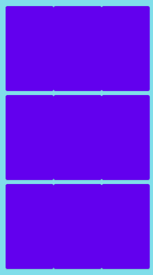
交互4：界面细节修改
用户：
我想要GridLayout是一个正方形的形状，这样他里面的9个button也都是正方形，这样会好看一点，现在的 girdlayout是android:layout_width="match_parent" android:layout_height="match_parent"，现在的界面如图所示，button不是个正方形，我 应该如何修改
ChatGPT：
要让 GridLayout 保持正方形，同时确保里面的 Button 也是正方形，你可以采用自定义的 View 或者在 ConstraintLayout 中使用一些巧妙的约束技巧。
一个简单的解决方案是在 ConstraintLayout 中对 GridLayout 设置宽度和高度约束，使其基于最小的维度（宽度或高度）来设置尺寸。但是，这种方法可能需要你写一些自定义的代码来动态地设置 GridLayout 的尺寸。
如果你想通过XML来尝试解决这个问题，你可以利用 ConstraintLayout 的特性，为 GridLayout 添加一个纵横比（aspect ratio）。以下是如何修改你的 activity_main.xml 来尝试实现这一目标：
<androidx.constraintlayout.widget.ConstraintLayout
xmlns:android="http://schemas.android.com/apk/res/android"
xmlns:app="http://schemas.android.com/apk/resauto"
xmlns:tools="http://schemas.android.com/tools"
android:layout_width="match_parent"
android:layout_height="match_parent"
tools:context=".MainActivity">
<GridLayout
android:id="@+id/gridLayout"
android:layout_width="0dp"
android:layout_height="0dp"
android:rowCount="3"
android:columnCount="3"
android:background="@color/board_background"
android:padding="16dp"
app:layout_constraintDimensionRatio="1:1"
app:layout_constraintTop_toTopOf="parent"
app:layout_constraintBottom_toBottomOf="parent"
app:layout_constraintLeft_toLeftOf="parent"
app:layout_constraintRight_toRightOf="parent"
app:layout_constraintStart_toStartOf="parent"
app:layout_constraintEnd_toEndOf="parent">
<!-- Buttons go here -->
</GridLayout>
</androidx.constraintlayout.widget.ConstraintLayout>
我添加了 app:layout_constraintDimensionRatio="1:1" 属性给 GridLayout，这会让其宽度 和高度保持相同，形成正方形。我也将 GridLayout 设置为水平和垂直居中，并且宽度和高度都设置为0dp，这让其尺寸基于约束而非固定值。这样， GridLayout 将会居中显示，并且基于较小的尺寸（宽 度或高度） 自动调整为正方形。
对于 Button 来说，由于它们在 GridLayout 中，只要 GridLayout 是正方形的，而且每个
Button 的宽度和高度都是 0dp，且分配了相同的 columnWeight 和 rowWeight，它们自然就 会成为正方形。再次运行你的应用看看效果是否如预期。如果有什么问题，请告诉我。
操作：
注意，这里大模型给出的是一个非常有意思的案例，前面我们说过了ConstraintLayout很好用，这里我们就可以看出来了，我们可以讲GridLayout嵌入到ConstraintLayout里面，这样我们就可以用两边的方法了。接下来，我们可以仔细学习一下大模型给的代码和解释，看看大模型是如何使用约束来设置每一个按钮为正方形，然后按照回答修改activity_main.xml中GridLayout的代码，界面修改为以下样式： 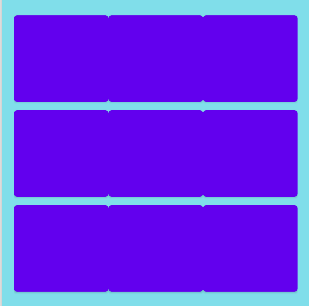
到这里，我们就基本将一个棋盘设置好了，当然样式还不是那么好看，读者可以思考如何将界面进行进一步优化。
思考：如何改变颜色、风格和界面的效果。
6.1.3 游戏逻辑设计
交互1：初步逻辑设计
用户：
很好，现在界面布局基本上感觉可以满足要求，现在我们来进行步骤四编写游戏逻辑，请你根据你前面给我的步骤，一步一步告诉我应该怎么做
ChatGPT：
很高兴听到界面布局符合您的预期！接下来，我们将实现井字棋游戏的核心逻辑。这里是如何一步步实现的：
第4步 ：编写游戏逻辑
设置数据结构
1.在你的 MainActivity.java 中，创建一个表示棋盘的二维数组。我们可以用字符类型来表示， 'X'， 'O'，和一个空格表示还没有玩家下子的格子。
private char[][] board;
private boolean player1Turn = true; // 假设玩家1用 'X'表示，始终先走
2.在 onCreate 方法或者一个初始化方法中，为棋盘数组分配内存，并将所有位置设置为一个空格。
board = new char[3][3];
for (int i = 0; i < 3; i++) {
for (int j = 0; j < 3; j++) {
board[i][j] = ' ';
}
}
处理玩家动作
实现 onGridButtonClick 方法，当玩家点击任意一个按钮时触发。在这个方法中，你需要根据当前 轮到的玩家来设置按钮的文本，并更新棋盘数组。
public void onGridButtonClick(View v) {
if ( !(v instanceof Button)) {
return;
}
Button button = (Button) v;
int row = Integer.parseInt(button.getTag().toString()) / 3;
int col = Integer.parseInt(button.getTag().toString()) % 3;
if (board[row][col] != ' ') {
// Cell is already occupied
return;
}
if (player1Turn) {
button.setText("X");
board[row][col] = 'X';
} else {
button.setText("O");
board[row][col] = 'O'; }
if (checkForWin()) {
// Someone has won!
if (player1Turn) {
Toast.makeText(this, "Player 1 wins!", Toast.LENGTH_SHORT).show();
} else {
Toast.makeText(this, "Player 2 wins!", Toast.LENGTH_SHORT).show(); }
// Reset the board or disable it
} else if (isBoardFull()) {
// The board is full and it's a draw
Toast.makeText(this, "It's a draw!", Toast.LENGTH_SHORT).show();
// Reset the board or disable it
} else {
// No one has won and the board is not full, switch the turn
player1Turn = !player1Turn;
}
}
检查胜利条件
1.实现 checkForWin 方法，用来检查是否有玩家赢得了游戏。这个方法会检查三行、三列和两个对角线。
private boolean checkForWin() {
for (int i = 0; i < 3; i++) {
if (board[i][0] == board[i][1] && board[i][0] == board[i][2] && board[i][0] != ' ') {
return true; // Row
}
if (board[0][i] == board[1][i] && board[0][i] == board[2][i] && board[0][i] != ' ') {
return true; // Column
}
}
if (board[0][0] == board[1][1] && board[0][0] == board[2][2] && board[0][0] != ' ') {
return true; // Diagonal
}
if (board[0][2] == board[1][1] && board[0][2] == board[2][0] && board[0][2] != ' ') {
return true; // Opposite diagonal
}
return false;
}
检查棋盘是否已满
实现 isBoardFull 方法，以检查棋盘是否已经没有空位。
private boolean isBoardFull() {
for (int i = 0; i < 3; i++) {
for (int j = 0; j < 3; j++) {
if (board[i][j] == ' ') {
return false;
}
}
}
return true;
}
设置按钮标记
为了能够识别按钮对应的棋盘格，你需要给每个按钮在布局文件中设置一个 tag。 tag 应该是一个从 0到8的数字，这样你可以通过 tag 快速计算出按钮对应的行和列。
<Button
android:id="@+id/button1"
android:tag="0"
... />
给剩余的按钮设置 tag，从上到下，从左到右，分别是0到8。
重置棋盘
如果需要，实现一个重置棋盘的方法，当游戏结束时可以调用。
private void resetBoard() {
for (int i = 0; i < 3; i++) {
for (int j = 0; j < 3; j++) {
board[i][j] = ' ';
// Reset the button text as well
String buttonID = "button" + (i * 3 + j + 1);
int resID = getResources().getIdentifier(buttonID, "id", getPackageName());
((Button) findViewById(resID)).setText("");
}
}
player1Turn = true; // Reset the turn to player 1
}
操作：
这一部分大模型给出了很多代码，同时将游戏的基本逻辑都实现了，我们可以将上述代码分别复制粘贴至MainActivity.java和activity_main.xml文件中，并且补全相应了库文件，即
import android.view.View;
import android.widget.Button;
import android.widget.Toast;
此时已经实现基本逻辑并且几乎可以正常进行游戏，也可以判断游戏输赢。 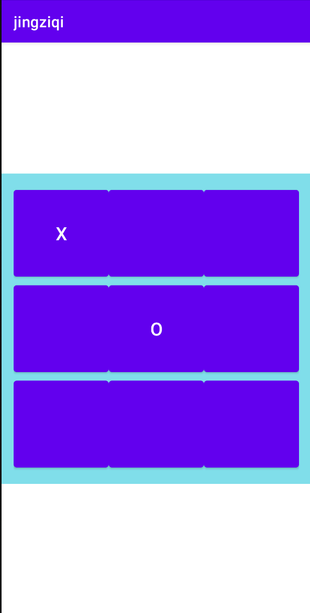
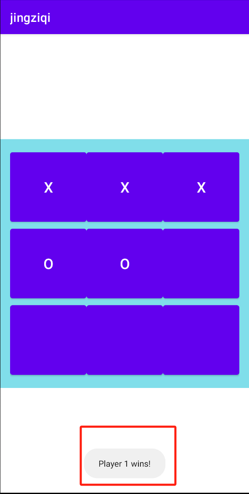
不过在玩家1胜利之后，游戏并不会继续，并且之后所有的行为都是玩家1的操作，游戏也不具备重置功能。
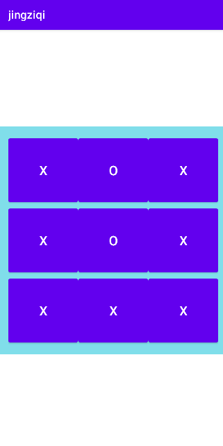
至此，已经完成了步骤4，还需要完成步骤5之后才会进入步骤6的测试环节。
这时候需要继续询问一些问题，进一步完善程序的功能，注意，基于我们的询问模式，大模型是知道整个项目的目标，这时候我们可以基于之前的目标来提问。这一步很重要，我们要让大模型保持之前的记忆。
交互2：程序功能完善
用户：
很好，看起来你的实现基本上是正确且完整的，我们稍后测试。现在我们来完成我们井字棋的第五步，添加交互逻辑，请你根据你之前给我的步骤，一步一步详细告诉我我们给井字棋添加交互逻辑时候的详细步骤应该怎么来实现。
ChatGPT：
添加交互逻辑的步骤主要涉及设置事件监听器，并响应玩家的点击事件。下面是如何实现这一点：
第5步 ：添加交互逻辑
为每个按钮添加事件监听器
在你的 MainActivity 的 onCreate 方法中，你需要为每个按钮设置一个事件监听器。由于你已经为 每个按钮在XML布局中定义了一个 onClick 属性，方法名为 onGridButtonClick，实际上你已经设 置好了每个按钮的监听器。
每当按钮被点击时， onGridButtonClick 方法就会被调用。
@Override
protected void onCreate(Bundle savedInstanceState) {
super.onCreate(savedInstanceState);
setContentView(R.layout.activity_main);
// 设置棋盘的初始状态
resetBoard();
// 其他初始化代码
}
实现 onGridButtonClick 方法
你已经在前面步骤中创建了 onGridButtonClick 方法，它是 View.OnClickListener 接口的实 现。在这个方法中，你将会根据点击的按钮来更新游戏的状态。
确保 onGridButtonClick 方法与你在XML中指定的方法名一致，并且这个方法是 public 的，并且 有一个 View 类型的参数。
public void onGridButtonClick(View v) {
// 实现步骤4中描述的方法内容
}
处理游戏状态更新
在 onGridButtonClick 方法中，你将需要做以下几件事情：
- 检查被点击的格子是否已经被占用。
- 根据当前是哪个玩家的回合，更新棋盘状态和按钮显示的文本。
- 检查游戏是否已经结束（某个玩家获胜或棋盘已满）。
响应游戏结束
游戏结束后，你需要告诉玩家结果，并提供重新开始的选项。这通常涉及到显示一个对话框或者一个Toast消息，并重置棋盘状态。你可以在 checkForWin 或 isBoardFull 返回 true 后，调用一个方法来 处理游戏结束逻辑。
重置游戏
提供一个方法或按钮允许玩家重置游戏并开始新的一局。
private void gameOver(String winner) {
// 显示游戏结束消息
Toast.makeText(this, winner + " wins!", Toast.LENGTH_SHORT).show();
// 提供一个按钮或方式重置游戏
// 可以是一个对话框中的“Restart”按钮，或者一个专门的“Reset”按钮
}
如果你想要使用对话框，你可以使用 AlertDialog.Builder 来构建和显示一个对话框。在对话框中，你可以添加一个按钮，当点击时，就调用 resetBoard 方法。
private void showGameOverDialog(String winner) {
new AlertDialog.Builder(this)
.setTitle("Game Over")
.setMessage(winner + " wins!")
.setPositiveButton("Restart", new DialogInterface.OnClickListener() {
@Override
public void onClick(DialogInterface dialog, int which) {
resetBoard();
}
}).show();
}
更新UI
记得在游戏逻辑更新后，也要同步更新UI，显示当前轮到哪个玩家以及更新游戏结果。
操作：
将相应代码复制粘贴进MainActivity.java的相应位置中。这个时候发现大模型的一些新的问题，大模型的回答中有些地方回答的比较模糊：考虑到大模型可能对之前的对话的记忆不够清晰了，另外我们已经进行到了最后一步，于是把所有的代码给了大模型，让他看看有没有需要修改的地方。这是一个最简单粗暴的做法。较好的方法是开发者自己来仔细阅读代码，看看有没有什么问题，如果还有一些问题的话，将问题针对性的发给大模型，让大模型来进行解答。
交互3：补充缺失代码
用户：
（此处附上所有代码。）
这是我的Mainactivity.java的代码，请你看一下是否符合你前面说的更新游戏逻辑的要求，如果有地方的 代码有缺失，我应该如何补充
ChatGPT：
你的 MainActivity.java 的代码实现看起来很好，已经涵盖了前面讨论的基本游戏逻辑。但是，还有一 些小细节可以改进来完善你的游戏：
- 游戏结束后的处理：在
checkForWin或isBoardFull方法返回true后，当前的代码中只是显示了一个Toast消息。更好的做法是调用showGameOverDialog方法来显示一个对话框，这样玩家可以选择重新开始游戏。 - 禁用棋盘：当检测到游戏结束后，你应该禁用棋盘上的所有按钮，防止玩家继续点击。这需要在
gameOver或showGameOverDialog方法调用之前完成。 - 重置游戏： 目前，
resetBoard方法是私有的，它会在创建活动时调用。你可以在showGameOverDialog的 "Restart" 按钮的onClick监听器中调用它。
根据以上点评，这里是你可能需要做的代码调整：
public void onGridButtonClick(View v) {
// ...（现有逻辑不变）
// Check for a win or a draw
if (checkForWin()) {
String winner = player1Turn ? "Player 1" : "Player 2";
gameOver(winner);
} else if (isBoardFull()) {
gameOver("Nobody"); // No one wins
} else {
// No win or draw, switch players
player1Turn = !player1Turn;
}
}
private void disableBoard() {
GridLayout gridLayout = findViewById(R.id.gridLayout);
for (int i = 0; i < gridLayout.getChildCount(); i++) {
gridLayout.getChildAt(i).setEnabled(false);
}
}
private void showGameOverDialog(String winner) {
AlertDialog.Builder builder = new AlertDialog.Builder(this);
builder.setTitle("Game Over");
if (!winner.equals("Nobody")) {
builder.setMessage(winner + " wins!"); } else {
builder.setMessage("It's a draw!"); }
builder.setPositiveButton("Restart", new DialogInterface.OnClickListener() {
@Override
public void onClick(DialogInterface dialog, int which) {
resetBoard();
}
});
builder.show();
}
private void resetBoard() {
// ...（现有逻辑不变）
enableBoard();
}
private void enableBoard() {
GridLayout gridLayout = findViewById(R.id.gridLayout);
for (int i = 0; i < gridLayout.getChildCount(); i++) {
gridLayout.getChildAt(i).setEnabled(true);
}
}
在上述代码中， disableBoard 方法禁用了 GridLayout 中的所有子视图（即所有按钮），防止玩家 在游戏结束后继续点击它们。 enableBoard 方法则在重置棋盘时重新启用它们。
此外，
showGameOverDialog 现在不仅会在有玩家获胜时显示，还会在游戏平局时显示。 请根据需要调整以上代码，并测试以确保一切按预期工作。
操作：
这里我们发现就如我们前面说的一样，大模型是能够辅助进行代码优化的，它能够找出代码中的一些问题，并将问题进行优化。我们可以将大模型提供的相应代码复制粘贴进MainActivity.java，或者基于大模型的回答对相应代码逻辑进行修改。此时我们发现另外一个问题，有个gameover函数比较简陋，感觉这里可能会出错，于是询问是否需要调整。注意，这里是需要用户有一定的移动应用开发基础，否则就无法问出相关的问题，也无法对程序进行改进。
交互4：补充缺失代码
用户：
private void gameOver(String winner) {
// 显示游戏结束消息
Toast.makeText(this, winner + " wins!", Toast.LENGTH_SHORT).show();
// 提供一个按钮或方式重置游戏
// 可以是一个对话框中的“Restart”按钮，或者一个专门的“Reset”按钮
}
这个函数的代码需要做调整吗，我感觉他不完整
大模型:
是的， gameOver 方法目前只是显示一个 Toast 消息，并没有提供玩家重新开始游戏的选项。考虑到游 戏结束后玩家可能想要直接开始新游戏，更好的做法是使用 showGameOverDialog 方法，该方法提供了一个对话框和一个重新开始游戏的按钮。
因此，你可以考虑移除 gameOver 方法，并确保在游戏逻辑中直接调用 showGameOverDialog。如果 你保留 gameOver 方法，应该在其中调用 showGameOverDialog 方法来显示对话框。下面是一个更新后的 gameOver 方法：
private void gameOver(String winner) {
// 禁用棋盘以防止进一步的点击
disableBoard();
// 使用 AlertDialog 来提供一个重新开始的选项
showGameOverDialog(winner);
}
同时，确保在游戏逻辑中，当检测到有一方获胜或者游戏为平局时，调用 gameOver 而不是直接显示 Toast 消息
。
在 onGridButtonClick 方法中的相关部分进行如下调整：
if (checkForWin()) {
String winner = player1Turn ? "Player 1" : "Player 2"; gameOver(winner);
} else if (isBoardFull()) {
gameOver("Nobody"); // 或者使用合适的消息表明平局
}
现在，无论是获胜还是平局，都会通过对话框告知玩家结果，并提供重新开始游戏的选项。记得在调用gameOver 方法后，实际上不需要再进行任何操作，因为对话框将接管后续的交互，直至玩家选择重新开始 或关闭对话框。
操作：
按照大模型给出的代码，我们又发现了一个有趣的问题，大模型也犯错误了！我们将相应代码复制粘贴至MainActivity.java文件中进行相应的修改，上述代码将原本的
if (checkForWin()) {
String winner = player1Turn ? "Player 1" : "Player 2";
gameOver(winner);
} else if (isBoardFull()) {
gameOver("Nobody"); // No one wins
} else {
// No win or draw, switch players
player1Turn = !player1Turn;
}
替换成了
if (checkForWin()) {
String winner = player1Turn ? "Player 1" : "Player 2"; gameOver(winner);
} else if (isBoardFull()) {
gameOver("Nobody"); // 或者使用合适的消息表明平局
}
这就导致了，玩家无法进行交换，永远都是玩家1在下棋，始终没有轮到玩家2下棋。而交换下棋这一操作，其实在原本的代码里面是已经实现并且正确的。这就是我们前面提到过的，我们一定要自己认真来检查代码，大模型是很有可能出现错误或者幻觉的。
交互5：逻辑问题修正
用户：
很好，我们现在已经实现了下棋的基本步骤，但是我在测试中发现，我们的井字棋游戏一直都是玩家一在下棋， 正确的井字棋应该是玩家一在下完棋之后轮到玩家二来下棋。现在请你告诉我应该如何修正这个问题。
（此处附上所有代码。）
ChatGPT：
在您的代码中，轮流机制本应该是由 player1Turn 这个布尔变量控制的。在每次玩家下棋后，这个变量应该切换它的值。从您的代码看来，您已经实现了这个逻辑，但是您可能没有在玩家进行了合法移动后更新这个变量。这通常应该发生在 onGridButtonClick 方法中每次移动后。要解决这个问题，您需要确保在每次移动后都切换 player1Turn 的值。您的代码中似乎缺少了更新回合的逻辑。
在 onGridButtonClick 方法中，在 checkForWin() 和 isBoardFull() 的检查之后，您需要
添加一个切换 player1Turn 值的操作。这应该在游戏结束的逻辑之前。以下是修改后的 onGridButtonClick 方法：
public void onGridButtonClick(View v) {
if (!(v instanceof Button)) {
return;
}
Button button = (Button) v;
int row = Integer.parseInt(button.getTag().toString()) / 3;
int col = Integer.parseInt(button.getTag().toString()) % 3;
if (board[row][col] != ' ') {
// Cell is already occupied
return;
}
if (player1Turn) {
button.setText("X");
board[row][col] = 'X';
} else {
button.setText("O");
board[row][col] = 'O';
}
// Check for a win or a draw
if (checkForWin()) {
String winner = player1Turn ? "Player 1" : "Player 2";
gameOver(winner);
} else if (isBoardFull()) {
gameOver("Nobody"); // No one wins
} else {
// No win or draw, switch players
player1Turn = !player1Turn;
}
}
请注意，在您的原始代码中，这个切换是正确放置的，但是我在这里重复了以便于您理解。确保在您的实际代码中不要重复这个逻辑。
如果您已经按照这种方式进行了操作，但轮流机制仍然不起作用，可能的原因是其他地方的逻辑出现了问题。请确保：
- 没有任何其他地方在错误地重置
player1Turn变量。 - 您的按钮的
tag设置正确，没有导致错误的行列计算。 - 在重置棋盘的时候正确地启用了所有的按钮。
检查这些细节，并确保在每次合法的移动后都正确切换了回合。这应该会让您的井字棋游戏正确地轮换玩家。
操作：
修改onGridButtonClicked函数，更改游戏切换的逻辑，发现更改后游戏逻辑完全正确，出现的问题也全部被解决。
游戏运行如下图所示：
1.当玩家1成功之后会弹窗显示Player 1 wins!，并且有restart按钮用于重置游戏。
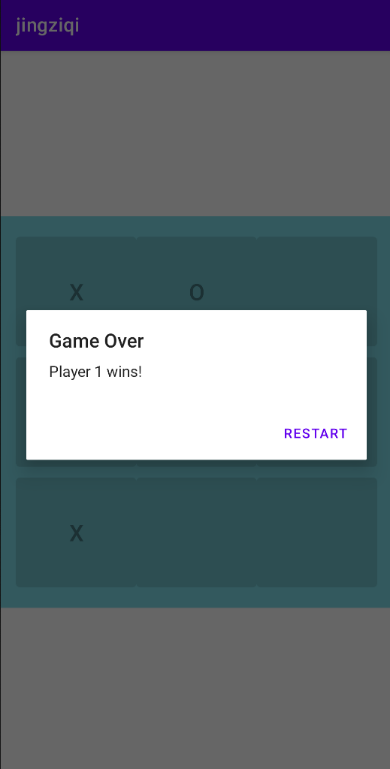
2.当玩家1成功之后会弹窗显示Player 2 wins!，并且有restart按钮用于重置游戏。
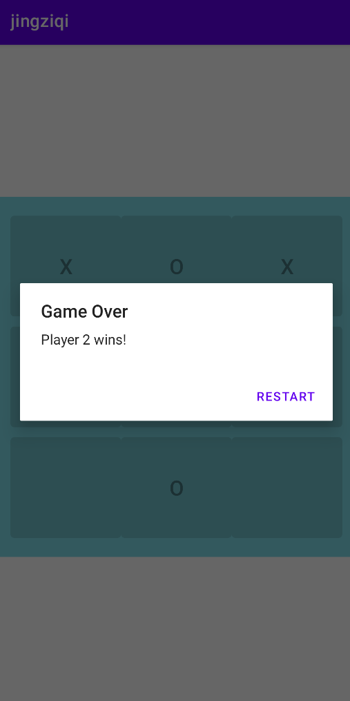
3.当玩家1成功之后会弹窗显示Player 2 wins!，并且有restart按钮用于重置游戏。
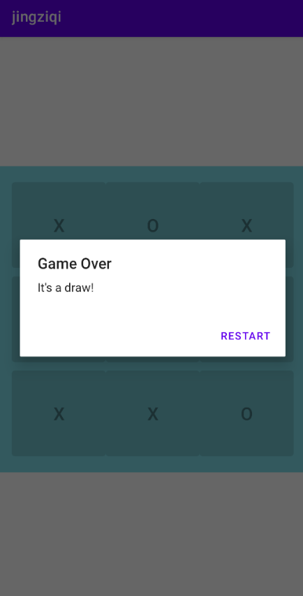
不过此时依然会出现一些小小的bug，比如如果游戏结束时，未点击到RESTART按钮，而是点击到了屏幕的其他地方，并不会重置游戏，这些问题就留给读者，读者可以思考一下，如何跟大模型进一步交互解决这些问题。
至此，我们已经成功的在大模型的帮助下实现了井字棋的游戏，可以正确进行游戏的操作。
同时，也有一些值得在交互过程中值得注意的点如下： 1. 在实现界面的时候，看到Android Studio 对button的layout_weight属性的警告后及时进行了询问，让大模型看看是哪里出现了问题，也得到了正确的答复来修改这个问题。没有在最后全部的步骤完成之后才去运行发现问题，而是在实现了界面之后就去运行看看界面实现的是否正确，界面实现有问题的时候先去跟大模型提问让他来解决。等我们的界面实现基本可以满足要求之后，然后去进行下一步。 2. 在发现大模型回答的感觉有点不连贯，力不从心的时候，及时把全部的代码给他，让他先检查下是否正确，然后等大模型补充完整之后，再进行下一步。如果对于大型项目，无法给出全部的代码的话，我们可以思考一下，如何将前面的知识尽量压缩的输送给大模型，如何分模块来给大模型提问，这些都是实际在使用中需要注意的。 3. 一些对话中的提示词，比如“一步一步” 、“详细”、“很好“等，让大模型提升表现。
6.2 缺乏经验的开发者
这里我们来看另外一个更有意思的问题，假设跟大模型对话用户基本上没有什么移动应用开发经验的，那么如何来跟大模型进行交互，是否能实现最后目标。
6.2.1 总体思路
交互1：整体结构设计
这里我们的第一个问题就是非常重要了。
用户：
你是一个精通Android开发和java语言的高级工程师，你熟练使用Android Studio，拥有多年开发经验，我对Android Studio和Android开发一窍不通，我现在需要使用Android Studio 和Java语言来实现一个井 字棋游戏，现在请你来辅助我我们一起一步一步来使用Android Studio实现这个井字棋小游戏。井字棋的规则如下：
两个玩家轮流在3x3的棋盘中下棋，先连成一条线的玩家获得胜利；我想要实现的界面效果大概如图中所示。我 们一步一步来实现这个小游戏吧
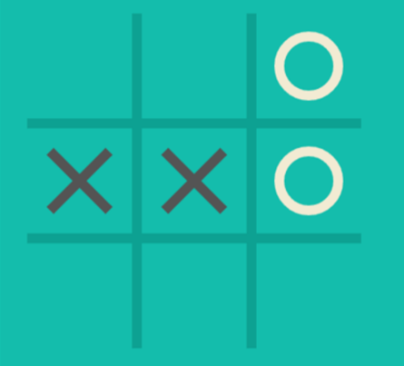
ChatGPT：
当然，我们可以一步一步来实现一个简单的井字棋游戏。首先，你需要确保你的计算机上已经安装了Android Studio以及相应的开发环境。下面是我们将要遵循的步骤：
1.创建新的项目:
- 打开Android Studio。
- 选择“Start a new Android Studio project”。
- 选择一个基本的Activity模板，比如Empty Activity。
- 填写应用名称、包名、保存位置等信息。
- 选择你的API等级（通常选择支持市面上大多数设备的API等级）。
2.设计布局:
- 我们需要为游戏创建一个3x3的网格。在
res/layout/activity_main.xml中，我们可以使用 GridLayout或者9个Button组成的网格。 - 设计Button样式，使其看起来像井字棋的单元格。
3.编写逻辑代码:
- 在
MainActivity.java中编写游戏逻辑，比如检查获胜条件、管理玩家轮流等。
4.测试应用:
- 运行应用在模拟器或真实设备上进行测试。
现在让我们开始吧。你是否已经安装好了Android Studio，并且准备好开始第一步了吗？如果是，请打开 Android Studio，然后创建一个新项目。如果你在此过程中遇到任何困难，请告诉我，我会帮助你解决
操作：
这里面有一个很有意思的地方，就像前面我们提到的一样，我们对双方的背景和角色进行了描述，这样方便大模型能够进行后面的回答。由于此时我们是一个对安卓开发一窍不通的人，所以我们从第一步开始询问大模型。
6.2.2 项目创建
交互1：基础项目创建
用户：
很好，现在请告诉我如何进行第一步，创建新项目，请一步一步告诉我应该如何实现
ChatGPT：
好的，我们来一步一步创建一个新的Android项目。请按照以下步骤操作：
1.启动Android Studio
- 打开Android Studio程序。
2.创建新项目
- 在Android Studio启动界面，选择“Start a new Android Studio project”。
3.选择项目模板
- 在“Select a Project Template”窗口，选择“Empty Activity”。这将为你创建一个带有一个简 单活动的新项目，这是一个很好的起点。
4.配置你的新项目
- 在“Configure your project”窗口，你需要填写以下信息：
- Name: 输入应用程序的名称，例如“TicTacToe”。
- Package name: 输入你的应用包名，通常是你的域名反过来加上应用名称，例如
com.example.tictactoe。 - Save location: 选择一个文件夹来保存你的项目。
- Language: 选择“Java”作为编程语言。
- Minimum API level : 选择一个API级别。为了兼容尽可能多的设备，建议选择API 21: Android 5.0 (Lollipop) 或更低。
5.完成项目创建
- 点击“ Finish”。Android Studio将为你创建一个新项目，并且配置所有必要的文件。
6.等待构建完成
- 项目创建后，Android Studio将开始构建项目并准备运行。这可能需要一些时间。
完成以上步骤后，你将有一个基础的Android项目，准备进行下一步，也就是设计游戏的布局。如果你需要帮 助或者有任何疑问，请随时告诉我。
操作：
大模型给出的步骤非常详细，我们根据大模型的回答，新建项目。
6.2.3 界面设计
交互1：初步界面设计
用户：
很好，感谢你，我已经完成了第一步，现在请你来指导我完成第二步我们来设计界面布局，请一步一步指导我，给我给出详细的正确的步骤
ChatGPT：
太好了！下面我们来设计界面布局。为了实现你提供的效果图中的样式，我们将使用GridLayout来创建3x3 的棋盘。每个格子将用一个Button表示。
1.打开布局文件:
- 在Android Studio的Project面板中，导航到
res->layout文件夹。 - 双击
activity_main.xml文件打开它。 - 设计GridLayout :
- 删除
activity_main.xml中的默认Hello World TextView。 - 在
activity_main.xml中，使用以下XML代码来创建一个GridLayout：
<GridLayout
xmlns:android="http://schemas.android.com/apk/res/android"
android:layout_width="match_parent"
android:layout_height="match_parent"
android:rowCount="3"
android:columnCount="3"
android:orientation="horizontal"
android:alignmentMode="alignMargins"
android:padding="16dp">
<!-- 这里之后我们将添加按钮 -->
</GridLayout>
这将创建一个3行3列的网格布局，并为整个网格设置了边距。
2.添加Buttons:
- 在
GridLayout内部，添加9个Button控件，每个Button表示棋盘上的一个格子。设置每个按 钮的宽度和高度为0，权重为1，以确保它们在布局中均匀分配空间。以下是一个Button的示例，你需要复制这个按钮9次，以填满整个网格：
<Button
android:layout_width="0dp"
android:layout_height="0dp"
android:layout_rowWeight="1"
android:layout_columnWeight="1"
android:layout_margin="5dp"
android:textSize="24sp"
android:id="@+id/button1"/>
给每个按钮一个唯一的ID，例如button1, button2, button3, ..., button9。
3.调整Button样式:
- 你可以设置按钮的背景颜色、文字颜色等属性来让它们看起来更像你提供的效果图中的样子。
- 也可以在
res/values/styles.xml中定义一个样式并应用到每个按钮，以避免重复的属性设置。
4.保存并查看布局:
- 保存你的
activity_main.xml文件。 - 点击Android Studio的设计视图，看看你的布局是否如你所愿。
完成上述步骤后，你的activity_main.xml文件看起来应该有一个3x3的网格，每个格子由一个按钮组成。接下来，你可以开始编写游戏逻辑。如果你需要进一步的帮助或对布局有其他的要求，请告诉我。
操作：
将代码复制粘贴进activity_main.xml，复制9个Button。
此时页面布局样式如下：
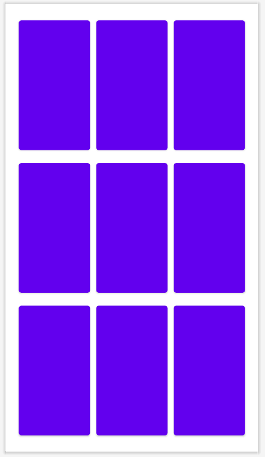
交互2：布局结构调整
用户：
很好，感谢你，我已经基本实现了界面的布局，接下来我想调整一下button的样式，我的界面布局更加美观一点，请你告诉我应该怎么做，请一步一步指导我
ChatGPT：
很棒！下面，我们将一起调整Button的样式，使其看起来更美观。
1.定义一个新样式:
- 在
res/values目录下，找到styles.xml文件并打开它。 - 在
<resources>标签内，定义一个新的<style>标签来创建自定义样式。 - 给你的样式取一个名称，如
ButtonStyle，并添加想要定义的属性。
2.编写样式代码:
- 在你的自定义样式中，添加想要的属性。例如，你可以设置背景颜色、文字颜色、边界等。这里是一个基本样式的例子：
<style name="ButtonStyle">
<item name="android:layout_width">0dp</item>
<item name="android:layout_height">0dp</item>
<item name="android:layout_margin">5dp</item>
<item name="android:layout_weight">1</item>
<item name="android:textSize">24sp</item>
<item name="android:background">@drawable/button_background</item>
<item name="android:textColor">@color/button_text</item>
<item name="android:gravity">center</item>
</style>
请注意， @drawable/button_background 和 @color/button_text 是引用了资源文件中 定义的颜色和背景。如果它们还没有被定义，我们需要接下来定义它们。
3.创建Button的背景:
- 在
res/drawable目录下，创建一个新的XML文件，比如命名为button_background.xml。 - 使用
selector标签来定义按钮的不同状态（正常、按下等）的背景。以下是一个基本的selector示例：
<?xml version="1.0" encoding="utf-8"?>
<selector xmlns:android="http://schemas.android.com/apk/res/android">
<!-- When selected, use grey -->
<item android:state_pressed="true" android:drawable="@color/grey"/>
<!-- Default -->
<item android:drawable="@color/white"/>
</selector>
在res/values/colors.xml中定义grey和white颜色值。
4.定义颜色资源:
- 打开
res/values/colors.xml文件。 - 添加你需要的颜色。例如：
<color name="white">#FFFFFFFF</color>
<color name="grey">#CCCCCC</color>
<color name="button_text">#FF5722</color>
这里button_text是按钮文本的颜色。
5.应用样式到Button:
- 回到
activity_main.xml文件。 - 对每个Button，添加
style属性来引用你的自定义样式。
例如：
<Button
style="@style/ButtonStyle"
android:id="@+id/button1"/>
确保每个按钮都应用了这个样式。
6.保存并查看效果:
- 保存所有更改。
- 返回Android Studio的设计视图，查看你的按钮样式是否已经更新。
现在，你的按钮应该有了自定义的外观。通过这种方式，你可以轻松地管理和更改按钮的外观，而不必为每个按 钮单独设置样式。如果你需要进一步的定制或遇到任何问题，请告诉我。
操作：
按钮回答一步一步更新xml文件，以实现按钮的自定义。不过这一步对于按钮的形状，颜色其实并没有做出什么改变，只是提供了一种可以自定义按钮的方式。页面的布局排版依旧与上一步骤相同。
6.2.4 游戏逻辑设计
交互1：完整逻辑设计
用户：
很好，现在我们来进行下一步，编写井字棋游戏的逻辑代码，现在请你认真思考我们在实现井字棋的过程中需要哪些逻辑，然后一步一步指导我来完成游戏的逻辑代码，请最好告诉我完整的代码
大模型：
编写井字棋的逻辑代码涉及到几个关键部分，包括管理玩家的轮流，检查获胜条件，以及重置游戏。下面，我将 逐步指导你完成这些功能的代码编写。
首先，让我们确定我们需要的逻辑：
- 玩家轮流: 需要一个变量来跟踪当前的玩家。
- 点击事件: 每个按钮被点击时都需要一个事件监听器。
- 更新界面: 按钮被点击后，需要更新按钮的文本来显示玩家的标记（X 或 O）。
- 检查获胜条件: 每次按钮点击后，检查是否有玩家获胜。
- 结束游戏: 如果有玩家获胜或所有格子都被填满，结束游戏。
- 重置游戏: 提供一种方式来重置游戏，以便重新开始。
接下来，我们将一步步实现上述逻辑。
步骤1: 定义变量
在MainActivity.java文件中，我们首先定义一些变量和基本的游戏状态：
public class MainActivity extends AppCompatActivity {
private Button[] buttons = new Button[9];
private boolean player1Turn = true; // true for player 1 turn, false for player 2
private int roundCount; // to count the number of rounds played
private int[] gameState = new int[9]; // to keep track of the game state, 0 means not clicked, 1 means player 1, 2 means player 2
@Override
protected void onCreate(Bundle savedInstanceState) {
super.onCreate(savedInstanceState);
setContentView(R.layout.activity_main);
for (int i = 0; i < buttons.length; i++) {
String buttonID = "button" + (i + 1);
int resID = getResources().getIdentifier(buttonID, "id", getPackageName());
buttons[i] = findViewById(resID);
buttons[i].setOnClickListener(new View.OnClickListener() {
@Override
public void onClick(View v) {
onButtonClicked((Button) v);
}
});
gameState[i] = 0; // Initialize game state
}
}
// Rest of the code will go here
}
这里，我们初始化了按钮数组，当前轮次的玩家，游戏的回合数，以及游戏状态数组。
步骤2: 按钮点击事件处理
我们需要为按钮点击事件编写一个方法：
private void onButtonClicked(Button button) {
if (!button.getText().toString().equals("")) {
return; // If the button is already clicked, do nothing
}
if (player1Turn) {
button.setText("X");
gameState[Integer.parseInt(button.getTag().toString())] = 1;
} else {
button.setText("O");
gameState[Integer.parseInt(button.getTag().toString())] = 2;
}
roundCount++;
if (checkForWin()) {
if (player1Turn) {
player1Wins();
} else {
player2Wins();
}
} else if (roundCount == 9) {
draw();
} else {
player1Turn = !player1Turn;
}
}
请确保在你的按钮标签中设置了Tag，从0到8，以便我们可以通过getTag方法识别被点击的按钮。
步骤3: 检查获胜条件
我们需要一个方法来检查是否有玩家赢得了游戏：
private boolean checkForWin() {
int[][] winPositions = {
{0, 1, 2}, {3, 4, 5}, {6, 7, 8}, // rows
{0, 3, 6}, {1, 4, 7}, {2, 5, 8}, // columns
{0, 4, 8}, {2, 4, 6} // diagonals
};
for (int[] winPosition : winPositions) {
if (gameState[winPosition[0]] != 0 &&
gameState[winPosition[0]] == gameState[winPosition[1]] &&
gameState[winPosition[0]] == gameState[winPosition[2]]) {
return true;
}
}
return false;
}
步骤4: 结束游戏
我们需要添加几个方法来处理游戏结束：
private void player1Wins() {
Toast.makeText(this, "Player 1 wins!", Toast.LENGTH_SHORT).show(); resetGame();
}
private void player2Wins() {
Toast.makeText(this, "Player 2 wins!", Toast.LENGTH_SHORT).show(); resetGame();
}
private void draw() {
Toast.makeText(this, "Draw!", Toast.LENGTH_SHORT).show(); resetGame();
}
private void resetGame() {
for (int i = 0; i < buttons.length; i++) {
buttons[i].setText("");
gameState[i] = 0;
}
roundCount = 0;
player1Turn = true;
}
我们还需要为按钮设置Tag，这可以在XML布局文件中完成，或者在onCreate方法中设置。 在布局文件中为每个按钮设置Tag，如下所示：
<Button
style="@style/ButtonStyle"
android:id="@+id/button1"
android:tag="0" />
请确保对所有9个按钮都这样做，并且每个Tag从0到8。
这就是基本的井字棋游戏逻辑。你现在可以运行应用并进行测试。当然，还可以添加更多功能，比如玩家姓名的 输入、得分板或者更复杂的AI对手，但这已经是一个不错的开始了。如果你遇到任何问题或者有更多的问题，请告诉我。
操作：
按钮上述步骤，一步一步在MainActivity.java文件中添加函数，最后再activity_main.xml中给每一个Button添加Tag。 运行发现，此时已经可以实现游戏的所有基础功能。
1.基础页面
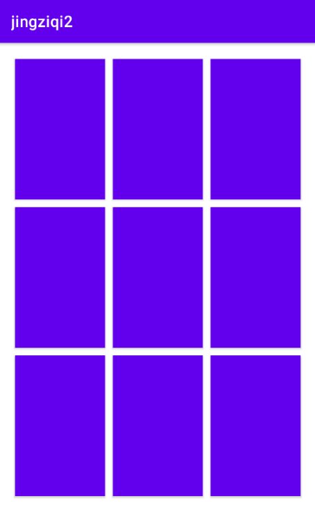
2.双方玩家下棋
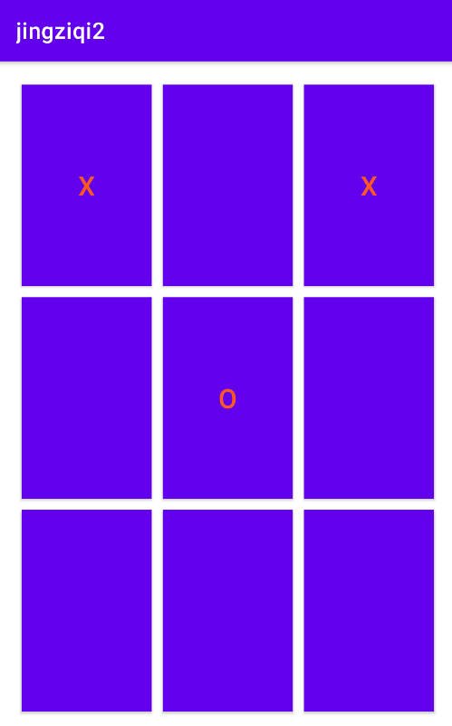
3.判断胜利
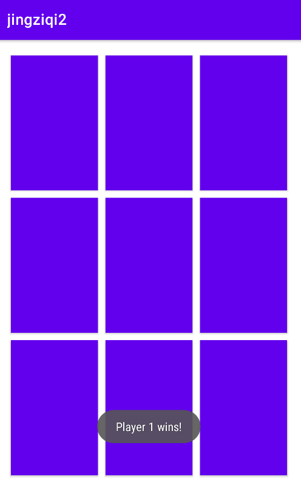
当玩家获胜时，会弹出Player 1 wins!的弹窗，但是同时也会使得已经下好的棋面立刻重置。
缺点在于，无法查看获胜时的牌面；优点在于，可以立刻开始下一局游戏。与第一种实现方式相比，也避免了没有点击到RESTART按钮导致的游戏无法重置的问题。
显然这个程序还不能达到一个精美游戏的效果，只是具备了大部分基本功能，如何对界面和功能进行优化，这个问题就留给读者们进一步完成。